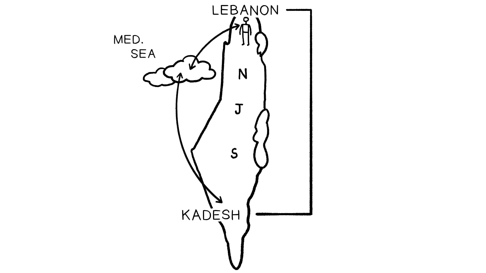
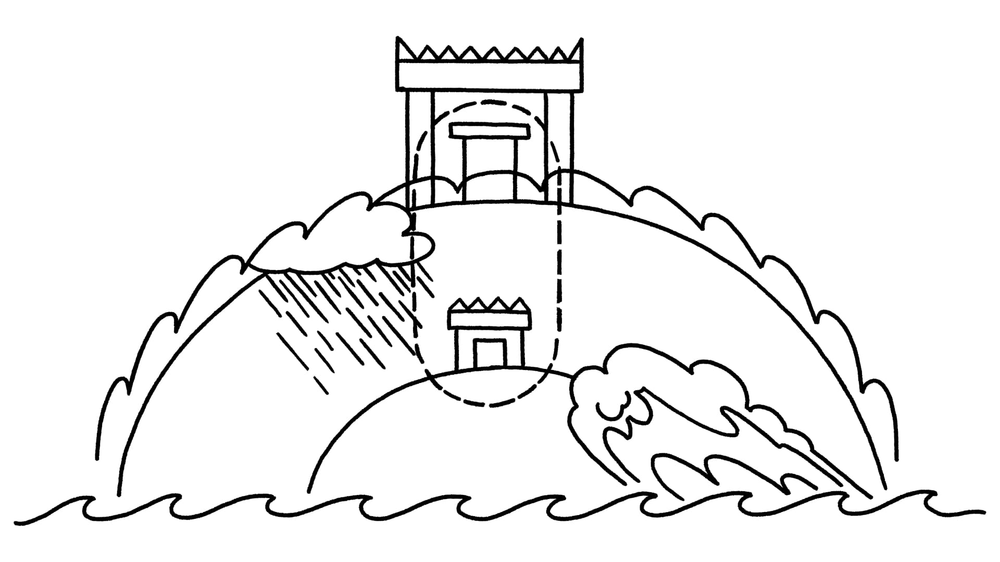

Sessão 14: Como a Poesia Bíblica se ComunicaSession 14: How Biblical Poetry Communicates
Principais LiçõesKey Takeaways
A poesia hebraica é moldada em um ritmo de linha ou versículo. Não é métrica (baseada em contagem de sílabas), mas uma forma de versolibre.Hebrew poetry is shaped into a line-rhythm or verse. It is not metrical (based on syllable counts) but a form of free verse.
A poesia hebraica usa linguagem intencional e criativa (por exemplo, uso pesado de metáfora) com combinações de palavras únicas, repetição, padrões e interligação a outras partes da Escritura.Hebrew poetry uses intentional, creative language (e.g., heavy use of metaphor) with unique word combinations, repetition, patterns, and hyperlinking to other parts of Scripture.
Os autores bíblicos constroem sua teologia do caráter, essência e propósito de Deus a partir de dentro de sua cosmovisão.The biblical authors build out their theology of God’s character, essence, and purpose from within their worldview.
A Poética da Poesia Bíblica: Tradução e Design Literário do Salmo 29The Poetics of Biblical Poetry: Translation and Literary Design of Psalm 29
1Dai a Yahweh, ó filhos de Deus, dai a Yahweh glória e força.Give to Yahweh, O sons of God give to Yahweh glory and strength.2Dai a Yahweh a glória devida ao seu nome; adorai a Yahweh na majestade de sua santidade.Give to Yahweh the glory due his name; worship Yahweh in the majesty of his holiness.3A voz de Yahweh está sobre as águas; o Deus da glória troveja, Yahweh sobre as poderosas águas.The voice of Yahweh is over the waters; the God of glory thunders, Yahweh over the mighty waters.4A voz de Yahweh é poderosa; a voz de Yahweh é majestosa.The voice of Yahweh is powerful; the voice of Yahweh is majestic.5A voz de Yahweh quebra os cedros; Yahweh despedaça os cedros do Líbano.The voice of Yahweh breaks the cedars; Yahweh breaks in pieces the cedars of Lebanon.6Ele faz o Líbano saltar como um bezerro, o Monte Sirion como um jovem boi selvagem.He makes Lebanon leap like a calf, Mount Sirion like a young wild ox.7A voz de Yahweh golpeia com relâmpagos.The voice of Yahweh strikes with flashes of fire.8A voz de Yahweh faz tremer o deserto; Yahweh faz tremer o Deserto de Cades.The voice of Yahweh shakes the desert; Yahweh shakes the Desert of Kadesh.9a voz de Yahweh faz estremecer os carvalhos e deixa as florestas nuas.the voice of Yahweh shakes apart the oaks and strips the forests bare.
Salmo 29. Tradução e Design Literário por Tim Mackie para BibleProject Classroom: Introdução à Bíblia Hebraica (2019).Psalm 29. Translation and Literary Design by Tim Mackie for BibleProject Classroom: Introduction to the Hebrew Bible (2019).
Definições e Características da Poesia em GeralDefinitions and Features of Poetry in General
A Encyclopedia Brittanica define poesia como “um tipo de literatura que evoca uma concentrada consciência imaginativa da experiência ou emoções de alguém por meio de linguagem bem-elaborada que é escolhida por seu significado, som e ritmo.”Encyclopedia Brittanica defines poetry as “a kind of literature that evokes a concentrated imaginative awareness of one’s experience or emotions by means of well-crafted language that is chosen for its meaning, sound, and rhythm.”
“A poesia é um tipo de linguagem humana que diz mais, e o diz com mais intensidade do que a linguagem comum.”“Poetry is a kind of human language that says more, and says it more intensely than does ordinary language.”
“A poesia transmite pensamento; há algo que o poeta quer comunicar. E a poesia transmite esse pensamento de maneira autoconsciente, através de uma estruturação especial da linguagem que chama a atenção para o ‘como’ da mensagem tanto quanto para o ‘o quê’. Na verdade, na boa poesia, o ‘como’ e o ‘o quê’ se tornam indistinguíveis. Como diz Robert Alter: ‘A poesia ... não é apenas um conjunto de técnicas para dizer de forma impressionante o que poderia ser dito de outra forma. Em vez disso, é uma maneira particular de imaginar o mundo.’”“Poetry conveys thought; there is something the poet wants to communicate. And poetry conveys that thought in a self-conscious manner, through a special structuring of the language that calls attention to the ‘how’ of the message as well as the ‘what.’ In fact, in good poetry, the ‘how’ and the ‘what’ become indistinguishable. As Robert Alter puts it: ‘Poetry ... is not just a set of techniques for saying impressively what could be said otherwise. Rather, it is a particular way of imagining the world.’”
Características Típicas da PoesiaTypical Features of Poetry
Densidade de expressão, concisão = menos palavras do que a fala normalDensity of expression, terseness = fewer words than normal speech
Uso intencional e criativo da linguagem (combinações de palavras únicas ou repetição)Intentionally creative use of language (unique word combinations or repetition)
Uso pesado de imagética e metáfora: combinar imagens que normalmente não nos ocorrem (derrota em batalha = lavada pelas águas caóticas)Heavy use of imagery and metaphor: combining images that don’t normally occur to us (defeat in battle = washed away by chaotic waters)
A poesia convida você a uma experiência imaginativa para comunicar maisPoetry invites you into an imaginative experience in order to communicate more
Um uso rítmico da linguagem (metro, rima, medida) que impõe restrições ao poeta e força uma economia de expressão, uma compressãoA rhythmic use of language (meter, rhyme, measure) that places constraints on the poet and forces an economy of expression, a compression
Pergunta para ReflexãoReflection Question


Resuma o que você aprendeu até agora sobre como a poesia bíblica funciona. Quais são algumas das coisas a se procurar enquanto você lê?Summarize what you’ve learned so far about how biblical poetry works. What are some of the things to look for as you read?